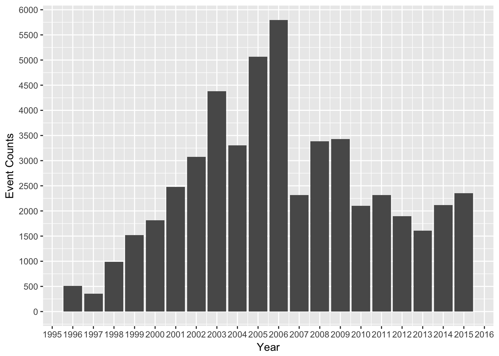
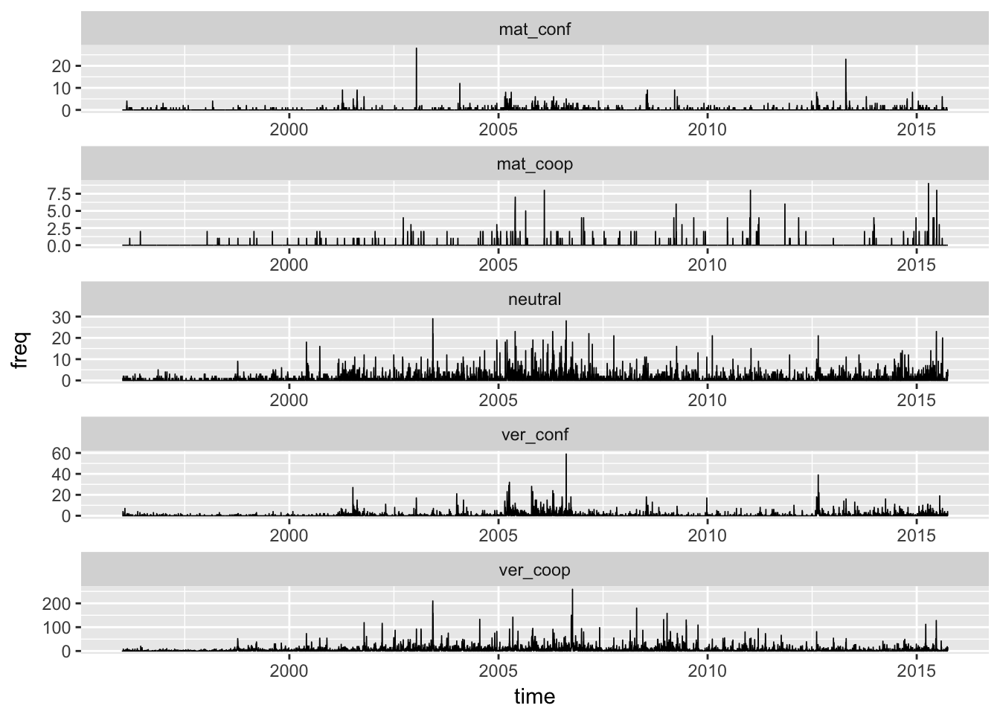
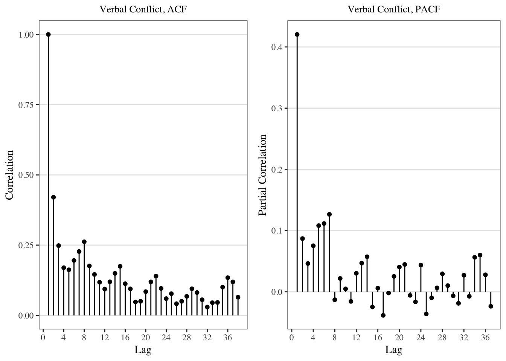

2 Outlook
2.1 Distribution of Data over Year
There are some issue with the R parser that leads to strange event counts compared to STATA.
bardata <- events %>%
mutate(year_time = as_date(floor_date(time, "year"))) %>%
group_by(year_time) %>%
summarize(freq = sum(freq))
ggplot(bardata) +
geom_bar(aes(x=year_time, y=freq), stat="identity") +
scale_y_continuous(breaks=seq(0,6000, 500)) +
scale_x_date(date_breaks="1 year", date_labels="%Y") +
labs(x="Year", y="Event Counts")
2.2 Using STATA
# Coding Scheme
neutral <- c("10","11","12","13","14","15","16","17","18","19","20",
"22","23","25","26","27",
"211", "212", "213", "214", "231", "233","234", "241","242","243",
"251", "252", "253", "256")
ver_coop <- c("30", "31", "32", "33", "35", "36", "37", "38", "39",
"40", "41", "42", "43", "44", "45", "46", "50", "51",
"52", "53", "54", "55", "56", "57",
"311", "312", "313", "314", "331", "0331", "333", "341", "342", "353")
mat_coop <- c("60", "61", "62","63", "64", "70", "71", "72", "73",
"74", "75", "80", "81",
"811", "831", "833", "841", "842", "861", "871", "872")
ver_conf <- c("90", "100", "101", "102", "105", "106", "107", "111", "112",
"113", "114", "115", "120", "124", "125", "127", "128", "130",
"131", "133", "134", "138", "139",
"1011", "1014", "1031", "1041", "1043", "1213", "1221", "1231",
"1232", "1233", "1241", "1312", "1313", "1621")
mat_conf <- c("141", "1412", "142", "143", "145", "150", "151", "153", "160",
"161", "162", "163", "164", "170", "172", "173", "174", "175", "180",
"181", "182", "183", "185", "186", "190", "191", "192", "193", "194",
"202",
"1711", "1721", "1821", "1822", "1823", "2042")stata <- read_csv("stata_icews.csv") %>%
filter(`sourcecountry` %in% c("Japan", "South Korea"),
`targetcountry` %in% c("Japan", "South Korea"),
`sourcecountry` != `targetcountry`) # some are domestic events## Parsed with column specification:
## cols(
## .default = col_character(),
## eventid = col_integer(),
## eventdate = col_date(format = ""),
## cameocode = col_integer(),
## intensity = col_double(),
## storyid = col_integer(),
## sentencenumber = col_integer(),
## latitude = col_double(),
## longitude = col_double(),
## J2K = col_integer(),
## K2J = col_integer()
## )## See spec(...) for full column specifications.stata <- stata %>%
mutate(cameo = cameocode,
category = ifelse(cameo %in% neutral, 0,
ifelse(cameo %in% ver_coop, 1,
ifelse(cameo %in% mat_coop, 2,
ifelse(cameo %in% ver_conf, 3,
ifelse(cameo %in% mat_conf, 4, 5))))),
direction = ifelse(`sourcecountry` == "Japan", "J2K", "K2J"),
freq = 1) %>%
dplyr::select(eventdate, direction, category, freq) %>%
mutate(
category = factor(category),
time = as_datetime(eventdate)
)
bardata2 <- stata %>%
mutate(year_time = as_date(floor_date(time, "year"))) %>%
group_by(year_time) %>%
summarize(freq = sum(freq))
ggplot(bardata2) +
geom_bar(aes(x=year_time, y=freq), stat="identity") +
scale_y_continuous(breaks=seq(0,6000, 500)) +
scale_x_date(date_breaks="1 year", date_labels="%Y") +
labs(x="Year", y="Event Counts")
2.3 Distribution of Event Categories
One can see the distrubtion of event categories:
stata %>% count(category) %>% knitr::kable()| category | n |
|---|---|
| 0 | 6007 |
| 1 | 38992 |
| 2 | 353 |
| 3 | 4421 |
| 4 | 1031 |
| 5 | 19 |
While in events each row is an event, I want each row to be a particular date with information of the frequency of an event of a particular type on that date.
event_sum <- stata %>%
group_by(time,category) %>%
summarize(freq = sum(freq)) %>%
complete(category, fill=list(freq=0))%>% ungroup(time)
# this does not work, need to merge first2.4 Daily Data
Now I have made each event category into its own coloumn and the data is ready for Time Series analysis.
event_transposed <- event_sum %>%
spread(key = "category", value = "freq") %>%
mutate(time = as_date(time))
names(event_transposed)[2:6] <- c("neutral", "ver_coop", "mat_coop", "ver_conf", "mat_conf")
compelte_series<-tibble(time = seq(as_date("1996-01-03"),by="days",length.out=7211))
compelte_series <- compelte_series %>% left_join(event_transposed[,-7], by="time") %>%
replace_na(replace = list(neutral=0,ver_coop= 0,mat_coop=0,ver_conf= 0,mat_conf= 0))
event_transposed <- compelte_series
event_transposed %>% head() %>% knitr::kable()| time | neutral | ver_coop | mat_coop | ver_conf | mat_conf |
|---|---|---|---|---|---|
| 1996-01-03 | 0 | 2 | 0 | 0 | 0 |
| 1996-01-04 | 0 | 0 | 0 | 0 | 0 |
| 1996-01-05 | 0 | 0 | 0 | 0 | 0 |
| 1996-01-06 | 0 | 0 | 0 | 0 | 0 |
| 1996-01-07 | 0 | 0 | 0 | 0 | 0 |
| 1996-01-08 | 1 | 0 | 0 | 0 | 0 |
2.4.1 Summary Statistics
When you save the notebook, an HTML file containing the code and output will be saved alongside it (click the Preview button or press Cmd+Shift+K to preview the HTML file).
summary(event_transposed)## time neutral ver_coop mat_coop
## Min. :1996-01-03 Min. : 0.000 Min. : 0.000 Min. :0.00000
## 1st Qu.:2000-12-09 1st Qu.: 0.000 1st Qu.: 0.000 1st Qu.:0.00000
## Median :2005-11-16 Median : 0.000 Median : 2.000 Median :0.00000
## Mean :2005-11-16 Mean : 0.833 Mean : 5.407 Mean :0.04895
## 3rd Qu.:2010-10-23 3rd Qu.: 1.000 3rd Qu.: 6.000 3rd Qu.:0.00000
## Max. :2015-09-30 Max. :29.000 Max. :259.000 Max. :9.00000
## ver_conf mat_conf
## Min. : 0.0000 Min. : 0.000
## 1st Qu.: 0.0000 1st Qu.: 0.000
## Median : 0.0000 Median : 0.000
## Mean : 0.6131 Mean : 0.143
## 3rd Qu.: 0.0000 3rd Qu.: 0.000
## Max. :59.0000 Max. :28.0002.4.2 Time Series Across Categories (Daily)
event_transposed %>% gather(neutral:mat_conf, key="event", value="freq") %>%
ggplot(aes(x=time, y=freq)) + geom_line(size=0.3) +
facet_wrap(~event, ncol=1, scale="free")
2.4.3 The “First Difference” of Time Series Across Categories (Daily)
event_transposed %>% gather(neutral:mat_conf, key="event", value="freq") %>%
ggplot(aes(x=time, y=c(0,diff(freq)))) + geom_line(size=0.3) +
facet_wrap(~event, ncol=1, scale="free")
2.5 Weekly Data
2.5.1 Data Structure
event_transposed_weekly <-
event_transposed %>%
mutate(time_week = floor_date(time, "week")) %>%
group_by(time_week) %>% # I take out direction so it becomes dyadic
summarize(
`Neutral Event` = sum(neutral),
`Verbal Cooperation` = sum(ver_coop),
`Material Cooperation` = sum(mat_coop),
`Verbal Conflict` = sum(ver_conf),
`Material Conflict` = sum(mat_conf)
)
event_transposed_weekly %>% head() %>% knitr::kable()| time_week | Neutral Event | Verbal Cooperation | Material Cooperation | Verbal Conflict | Material Conflict |
|---|---|---|---|---|---|
| 1995-12-31 | 0 | 2 | 0 | 0 | 0 |
| 1996-01-07 | 4 | 8 | 0 | 7 | 0 |
| 1996-01-14 | 3 | 6 | 0 | 0 | 0 |
| 1996-01-21 | 1 | 7 | 0 | 8 | 0 |
| 1996-01-28 | 0 | 6 | 0 | 0 | 0 |
| 1996-02-04 | 4 | 9 | 0 | 2 | 2 |
2.5.2 Time Series Across Categories (Weekly)
event_transposed_weekly %>%
gather(`Neutral Event`:`Material Conflict`, key="event", value="freq") %>%
ggplot(aes(x=time_week, y=freq)) + geom_line(size=0.3) +
facet_wrap(~event, ncol=1, scale="free") +
scale_y_continuous() + labs(x="Time (in weeks)", y="Frequency of Event Occurence")
2.5.3 Summary Statistics
summary(event_transposed_weekly) %>% knitr::kable()| time_week | Neutral Event | Verbal Cooperation | Material Cooperation | Verbal Conflict | Material Conflict | |
|---|---|---|---|---|---|---|
| Min. :1995-12-31 | Min. : 0.000 | Min. : 0.00 | Min. : 0.0000 | Min. : 0.000 | Min. : 0 | |
| 1st Qu.:2000-12-06 | 1st Qu.: 1.000 | 1st Qu.: 9.00 | 1st Qu.: 0.0000 | 1st Qu.: 0.000 | 1st Qu.: 0 | |
| Median :2005-11-13 | Median : 3.000 | Median : 21.00 | Median : 0.0000 | Median : 1.000 | Median : 0 | |
| Mean :2005-11-13 | Mean : 5.826 | Mean : 37.82 | Mean : 0.3424 | Mean : 4.288 | Mean : 1 | |
| 3rd Qu.:2010-10-20 | 3rd Qu.: 8.000 | 3rd Qu.: 47.00 | 3rd Qu.: 0.0000 | 3rd Qu.: 4.000 | 3rd Qu.: 1 | |
| Max. :2015-09-27 | Max. :72.000 | Max. :539.00 | Max. :20.0000 | Max. :96.000 | Max. :49 |